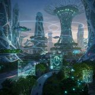

Умные материалы
Покрытия, которые самостоятельно устраняют небольшие повреждения техники и зданий.
Год прогноза:
Лев Патрушев
Футуролог и концепт-художник

Мне интересно представлять, как будет выглядеть мир будущего. Я придумываю концепции городов, технологий и космических поселений.
Мои идеи футуристических концептов:
Учебные концепции: годы внедрения указаны как предположения.
Покрытия, которые самостоятельно устраняют небольшие повреждения техники и зданий.
Год прогноза:
Электростанции, использующие управляемый термоядерный синтез для снабжения городов.
Год прогноза:
Более ёмкие накопители для электротранспорта и хранения солнечной энергии.
Год прогноза:
Изготовление деталей и сборка космических аппаратов непосредственно на орбите.
Год прогноза:
Вероятности — условные авторские оценки для учебного макета, а не результаты исследования.